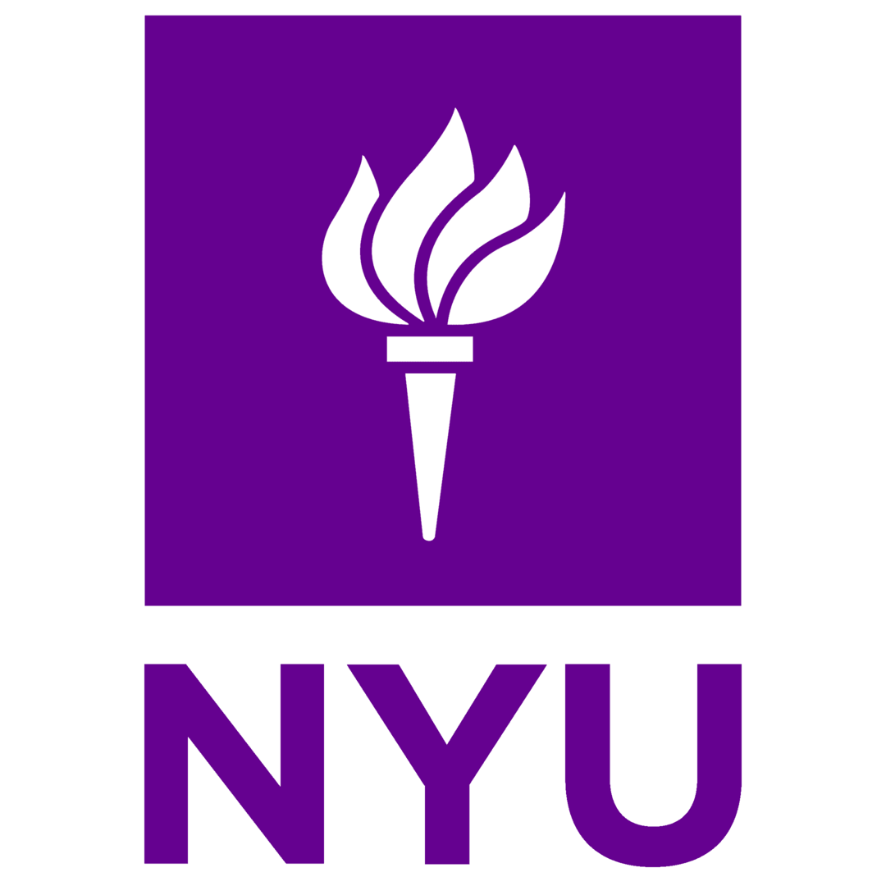

Research
- Architected a “zero-code” embodied-AI framework using Gemini 2.5 Pro and Moondream VLM to convert natural-language prompts into autonomous multi-robot task sequences.
- Engineered a hybrid navigation stack: RRT* for collision-free planning and a dual-stage Pure Pursuit + PID controller for high-fidelity tracking and precision terminal docking.
- Built a high-throughput distributed system (ZeroMQ RPC + 4-worker pool) for real-time command streaming to an ESP32 bridge via Wi-Fi, BLE, and ESP-NOW.
- Designed a centralized perception pipeline using multi-camera homography stitching, ChArUco calibration, and ArUco pose estimation.
- Validated performance through collaborative experiments (number ordering, word formation, color sorting) with online collision-aware replanning in dynamic environments.